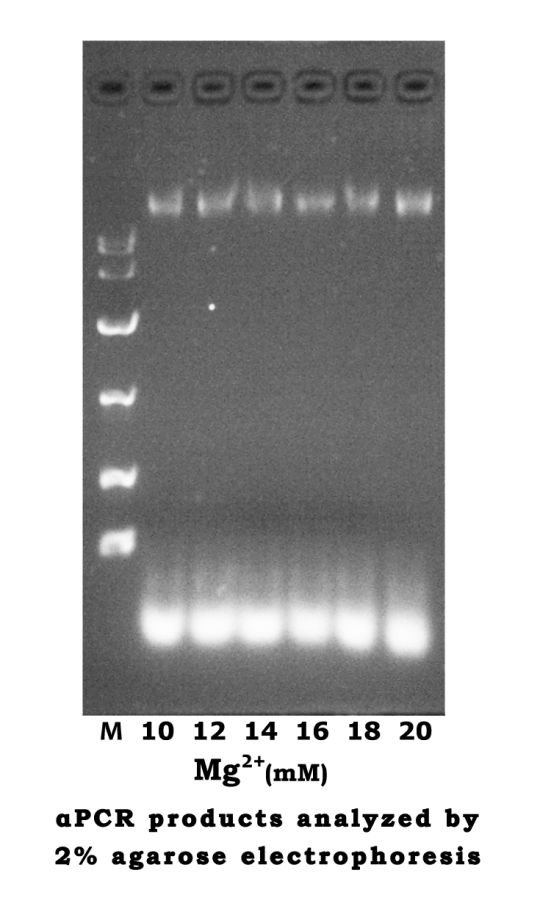

May 30th
Dilute the primers
- Add 10 times the volume of water into primer dry powder to turn the concentration into 100 μM. （1 nmol primer add 10 μl ddH2O）
- Dilute sense primer to a concentration of 50 μM, and dilute anti-sense primer to 1 μM.
| μl | Final concentration | |
|---|---|---|
| 5× Reaction Buffer | 10 | 1× |
| Sense Primer | 1 | 1 μM |
| Anti-sense Primer | 1 | 20 nM |
| M13 RF | 0.5 | 5ng |
| dNTP | 1 | |
| Q5 | 0.5 | 1U |
| ddH2O | 36 |
Run the PCR according to the following condition.
- Pre-denaturation at 95℃ for 4 min. Denaturation at 95℃ for 30s, annealing at 55℃ for 30s, extension at 72℃ for 5min 30s, 35 cycle. Final extension at 72℃ for 5min and store at 4℃.
Preparation and condition for agarose gel electrophoresis(0.8%)

- Mix 0.2g agarose with 25ml 1× TAE, heat to boil for three times.
- Add 5μl EtBr when the gel is less than 50℃.
- Mix 50μl PCR product with 5.5μl 10× loading buffer.
- Each channel of the agarose gel was added by 25μl of the PCR mixture.
- Run at 80V, 400mA, for 30min.
May 31st
Gel recovery procedure
- Excise the DNA fragment from the agarose gel.
- Weigh the gel slice and add 3 volumes of Extraction Buffer to 1 volume of gel（100mg=100μl）. The gel slices’ weight were 0.2766g，0.2591g and 0.2121g.
- Incubate at 50℃ until the gel melts in a heating block and vortex the tube every 2-3 minutes during the incubation.
- Apply the sample to Spin column, centrifuge for 1min at 6000xg. Discard the flow-through.
- Add 500μl Extraction Buffer to Spin column, centrifuge for 60s at 12000xg. Discard the flow-through.
- Add 750μl Wash Buffer to Spin column, wait for 3minutes, than centrifuge for 60s at 12000xg. Discard the flow-through.
- Centrifuge for an additional 1 min at 12000xg and transfer the Spin column to a sterile 1.5 ml micro-centrifuge tube.
- Add 50μl elution buffer to the Spin column and let it stand for 1 minute at room temperature.
- Centrifuge for 1min at 12000xg. The Buffer in the microcentrifuge tube contained the DNA.
- The OD260 that measured was 0.120 OD
June 1st
The first assembly
- Dilute everyone of the 118 staples to a concentration of 100 μM. Take 10μl of each and add 820 μl ddH2O to make the concentration of the staple mixture 500 nM.
- For the Tris-Hcl（Mg2+）Buffer, 0.012g Tris base, 0.0268g MgAc and 80μl HCL were added to reach a final concentration of 10mM Tris and 12.5mM Mg2+.
The annealing reaction
- The reaction was set as the following table(Scaffold:Staple=1:10)
- Reaction condition: 50℃ for 1h , stored at 4℃
- The staple mixture (500nM) was diluted into a concentration of 170nM, then added into the reaction tube.
| Volume | Final concentration | |
|---|---|---|
| Scaffold | 15μl | 1.7nM |
| Staple | 5μl | 17nM |
| Reaction buffer(Tris) | 30μl | 6mM Tris, 7.5mM MgAc |
June 5th
Preparation for the silicon slice
- Heat the slice in a mixture of 35ml Dense H2SO4 and 15ml H2O2 for 20min, until there are no bubbles
- Discard the solution. Wash the slice with water for several times then put them into a clean beaker.
- Add ultrapure water for liquid sealing and seal the beaker with sealing film.
Sample adsorption
- Take a 5μl volume of the sample, let it be deposited onto the silicon slice.
- Left to adsorb for 5 min.
- Wash with ddH2O to remove the salt, then let it to air dry and wait for imaging.
June 6th
Characterization of the nanostructure by AFM （Sample from June 1st）

June 8th

- Repeat the αPCR and agarose gel electrophoresis on May 30th.
- Repeat the gel recovery as the procedure on May 31st.
- The OD260 that measured was 0.107 OD.
June 9th
The annealing reaction
- The reaction was set as the following table(Scaffold:Staple=1:10&1:5)
- Reaction condition: Pre-denaturation at 95℃ for 4 min. Denaturation at 95℃ for 30s, annealing at 60℃ for 30s, extension at 72℃ for 5min, Denaturation at 95℃ for 30s, annealing at 50℃ for 30s, extension at 72℃ for 5min, 4 cycle. Final extension at 72℃ for 5min, 37℃ for 30min and store at 4℃
- The staple mixture (500nM) was diluted into a concentration of 60nM and 30nM, then added into the reaction tube.
| Volume | Final concentration | |
|---|---|---|
| Scaffold | 15μl | 0.6nM |
| Staple | 5μl | 6nM/3nM |
| Reaction buffer(Tris) | 30μl | 6mM Tris, 7.5mM MgAc |
June 14th
The characterization of closed-state structure.

June 30th
- Dilute Fuel strand and Anti-fuel strand to a concentration of 100μM.
- Take 10μl from each Fuel tube. Mix it with 80μl ddH2O to make a mixture of two different Fuel strands at a concentration of 10μM.
- Dilute the Anti-fuel strands in the same way.
July 5th

- Use the newly designed primer to perform an αPCR in the same way we did on May 30th, except the PCR cycle was changed into 40 times.
- Analyze the products by agarose gel electrophoresis（0.8%）
- Repeat the gel recovery as the procedure on May 31st.
- The OD260 that measured was 0.109 OD.
- Repeat the annealing reaction in the same procedure as the procedure on June 9th.
July 11st
Regulation
- Dilute the Fuel strand mixture to a concentration of 9nM.
- The scaffold was mixed with the newly diluted Fuel solution by 1:1( 15μl each).
- Perform an annealing reaction in a condition of 37℃ for 30min.
July 12th
Characterization of the nanostructure by AFM(sample from July 9th)

July 14th
50× TAE buffer
- 242g Tris, 18.612g EDTA, 57.1ml Glacial Acetic Acid and 800ml deionized water were added to a beaker.
- Its PH was adjusted to 8.3 with NaOH.
10× Mg2+ buffer(120mM)
- 0. 1143g MgCl2 were added to 10ml ddH2O.
The annealing reaction
| Volume | Final concentration | |
|---|---|---|
| Scaffold | 25μl | 3.25nM |
| Staple | 15μl | 32.5nM |
| 10× TAE | 5μl | 1× |
| 10× Mg2+ buffer | 5μl | 12mM |
- Reaction condition: lower the temperature form 80℃ to 40℃ at 4min/2℃, maintain 37℃ for 30min，store at 4℃.
July 15th
Regulation
- Dilute the Fuel strand mixture to a concentration of 48.75nM.(Diluted with 1× TAE).
- The scaffold was mixed with the newly diluted Fuel solution by 1:1(15μl each).
- Perform an annealing reaction in a condition of 37℃ for 30min, then the temperature slowly decrease to 16℃ at a rate of 3℃/min
- Mix the Fuel+ products with Anti-fuel strand (5nM) by 1:1(15μl each).
- Repeat the third step.
July 18th
The characterization of open-state structure.

July 21st
The annealing reaction
- Repeat the annealing reaction in the same procedure on June 9th
Preparation for TEM

- Drop 4μl of the sample solution on the grid, left to adsorb for 1 min.
- Wash away the excess salt by a drop of ddH2O, then touch the edge of the grid with a filter paper to wick away excess water.
- Touch the grid with a drop of 5% Phosphotungstic acid solution.
- Remove it quickly and touch with a second drop for 30s.
- Let the grid dry and keep it at room temperature.
- Analyze the Fuel+ and Anti+ products by agarose gel electrophoresis (2%)
July 25th
The characterization of open-state structure.

July 26th
- Perform an αPCR in the same way that did on July 5th
- Recover the products by repeating the steps on May 31st, except for the Elution buffer was changed into ddH2O.
- The gel slices’ weight were 0.2445g, 0.1679g, 0.1413g.
- The OD260 that measured was 0.480 OD.
July 28th
The characterization of closed-state structure.

July 31st
The characterization of closed-state structure.

The first step of TMV assembly
- 0.1654g NaH2PO4•2H2O, 6.9237g Na2HPO4•12H2O were added to 100ml ddH2O.(PBS buffer, PH 8.0).
- Dialyse the TMV protein at 4℃ in PBS buffer（PH 8.0）for 2 days.
August 2nd
The second step of TMV assembly
- 1.22g NaH2PO4•2H2O, 4.37g Na2HPO4•12H2O were added to 100ml ddH2O.(PBS buffer, PH 7.0).
- Change the buffer for dialysis into PBS buffer(PH 7.0).
- Dialyse at 4℃ for 1day.
August 24th
The annealing reaction
| Volume | Final concentration | |
|---|---|---|
| Scaffold | 10μl | 10nM |
| Staple | 20μl | 100nM |
| 10× TAE | 10μl | 1X |
| 10× Mg2+ buffer | 10μl | 12mM |
| ddH2O | 50μl |
- Reaction condition
- Take 10μl the NEB single strand M13 as the scaffold.
80℃→70℃ 4min/2℃ 64℃→48℃ 4min/2℃ 46℃→40℃ 4min/2℃
August 26th
DLS
- The sample temperature was maintained at 25℃ during measurement.
- The sample was measured at a concentration of 10 nM.


August 29th
The characterization of TMV assembly and closed-state DNA Origami

August 31st
Characterization of the nanostructure by AFM (sample from August 24th)

September 4th
The characterization of TMV assembly and closed-state DNA Origami

September 15th
The annealing reaction
| Volume | Final concentration | |
|---|---|---|
| Scaffold | 2μl | 10nM |
| Staple | 4μl | 100nM |
| 10× TAE | 2μl | 1× |
| 10× Mg2+ buffer | 2μl | 12mM |
| ddH2O | 10μl |
September 18th
The characterization of TMV assembly and open-state DNA Origami

September 23th
The first step of TMV assembly
- 0.2481g NaH2PO4•2H2O, 10.3856g Na2HPO4•12H2O were added to 150ml ddH2O.(PBS buffer, PH 8.0).
- Dialyse the TMV protein at 4℃ in PBS buffer（PH 8.0）for 2 days. September 25th
September 25th
The annealing reaction
| CMg2+ | 10mM | 12mM | 14mM | 16mM | 18mM | 20mM |
|---|---|---|---|---|---|---|
| Scaffold | 2μl | 2μl | 2μl | 2μl | 2μl | 2μl |
| Staple | 4μl | 4μl | 4μl | 4μl | 4μl | 4μl |
| 10× TAE | 2μl | 2μl | 2μl | 2μl | 2μl | 2μl |
| 10× Mg2+ | 2μl | 2μl | 2μl | 2μl | 2μl | 2μl |
| ddH2O | 10μl | 10μl | 10μl | 10μl | 10μl | 10μl |
- Reaction condition
80℃→70℃ 4min/2℃ 64℃→48℃ 4min/2℃ 46℃→40℃ 4min/2℃
37℃ 30min 4℃ ∞
The second step of TMV assembly
- 1.83g NaH2PO4•2H2O, 6.555g Na2HPO4•12H2O were added to 150ml ddH2O. (PBS buffer, PH 7.0).
- Change the buffer for dialysis into PBS buffer (PH 7.0).
- Dialyse at 4℃ more than one day.
September 26th
- Analyze the assembly through agarose gel electrophoresis (2%)

September 27th
The annealing reaction
| Volume | Final concentration | |
|---|---|---|
| Scaffold | 3μl | 10nM |
| Staple | 6μl | 100nM |
| 10× TAE | 3μl | 1× |
| 10× Mg2+ buffer | 3μl | 12mM |
| ddH2O | 15μl |
September 29th
The characterization of open-state and closed-state DNA Origami